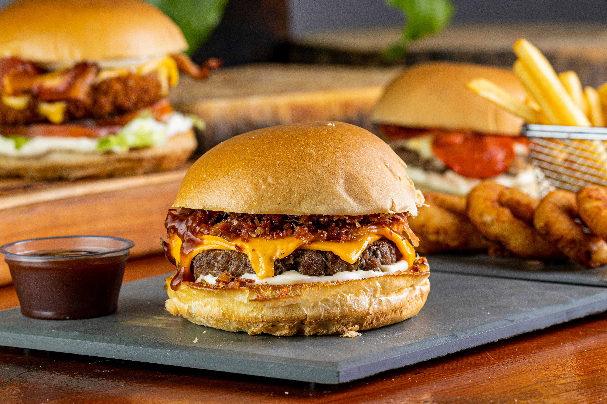

Home
Burger

Description
A hamburger (or simply a burger) consists of fillings—usually a patty of
ground meat, typically beef—placed inside a sliced bun or bread roll. The
patties are often served with cheese, lettuce, tomato, onion, pickles,
bacon, or chilis with condiments such as ketchup, mustard, mayonnaise,
relish or a "special sauce", often a variation of Thousand Island
dressing, and are frequently placed on sesame seed buns. A hamburger patty
topped with cheese is called a cheeseburger. Under some definitions, and
in some cultures, a hamburger is considered a sandwich.
Hamburgers are typically associated with fast-food restaurants and diners
but are also sold at other restaurants, including high-end establishments.
There are many international and regional variations of hamburgers. Some
of the largest multinational fast-food chains feature burgers as one of
their core products: McDonald's Big Mac and Burger King's Whopper have
become global icons of American culture.
Ingredients
- 6 slices bacon
- 800g ground beef, chuck
- Salt
- Pepper
- 1-2 tablespoon(s) olive oil
- 6 slices cheddar
- 4 burger buns
- 4 slices tomato
- 30g mayonnaise
- 30g ketchup
- 4 lettuce leaves
Steps
- Prepare the bacon in a pan. Cook over low heat until crunchy.
-
Divide the meat in to 4 equal parts and VERY, very gently mold it in to
patties, using little to almost no pressure as possible. Do not season.
This helps them become as soft and juicy as possible. The more you press
or squeeze the meat, the tougher and drier it will turn out!
-
Now you can season the meat with salt and pepper on both sides ….and
that's it! Use the same pan you prepared the bacon in, without wiping it
clean. The juice from the bacon will make the burgers even tastier.
-
Add them to the pan and very gently press on them with a spatula, just
to flatten them a bit.
-
Drizzle with some olive oil and cook according to your preference.
-
When they are done on the first side, flip them over and add 1 ½ slices
of cheddar and 1 ½ slices of bacon over each patty.When they are done on
the first side, flip them over and add 1 ½ slices of cheddar and 1 ½
slices of bacon over each patty. When ready, remove from heat and set
aside.
-
Wipe down the pan with some paper towels. Add a small amount of olive
oil and the hamburger buns. Gently press down on them with your hands
and just heat through.Wipe down the pan with some paper towels. Add a
small amount of olive oil and the hamburger buns. Gently press down on
them with your hands and just heat through.
-
Place the hamburger bun on a serving plate. Add a little mayonnaise and
ketchup. Then add the burger, tomato, lettuce.